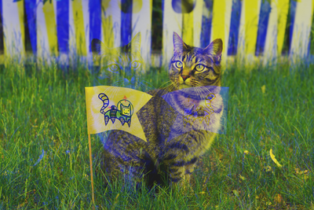
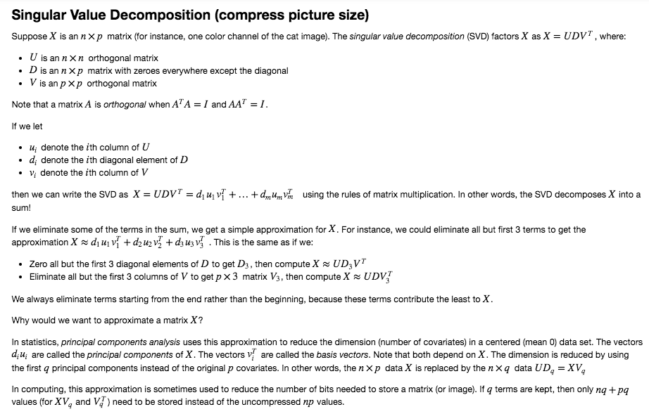
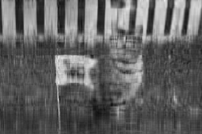

Image Processing Basics
Computers use tiny dots called pixels to display images. Each pixel is stored as an array of numbers that represent color intensities.
In an 8-bit grayscale image, each pixel is a single number. The number represents light intensity ranging from black (0) to white (255). In a 24-bit RGB color image, each pixel is an array of 3 numbers. These numbers range from 0 to 255 and represent red, green, and blue intensity, respectively. For instance, (0, 0, 255) is bright blue and (255, 128, 0) is orange.
In this project, I’ll use Python and NumPy to manipulate 24-bit RGB color images.
from PIL import Image
# Cat image from https://unsplash.com/photos/FqkBXo2Nkq0
cat_img = Image.open("cat.png")
cat_img

NumPy can convert images to arrays:
import numpy as np
cat = np.array(cat_img)
To convert an array back to an image (for display) use the function below:
def as_image(x):
"""Convert an ndarray to an Image.
Args:
x (ndarray): The array of pixels.
Returns:
Image: The Image object.
"""
return Image.fromarray(np.uint8(x))
cat.shape
(267, 400, 3)
In this ‘cat’ array, we have 3 dimension. Each dimension represent a color channel . Picture consist of 267*400 pixels points, each pixel has 3 numbers representing the intensity of red(x-axis), green(y-axis) and blue(z-axis).
If we want to swap the green(1) and blue(2) color channels in a copy.
BigCat = cat.copy()
BigCat[:,:,1] = cat[:,:,2]
BigCat[:,:,2] = cat[:,:,1]
def as_image(x):
return Image.fromarray(np.uint8(x))
as_image(BigCat)

If we want to flip the blue(2) color channel from left to right.
Cat14 = cat.copy()
Cat14[:, :, 2] = np.fliplr(Cat14[:, :, 2])
Image.fromarray(np.uint8(Cat14))


Application:
What’s the smallest number of terms where the cat is still recognizable as a cat? How many bytes does the red color channel of the cat image use? How many bytes does the compressed version use when 10 terms are kept? What percentage of the original size is this?
def fun1(Red,q):
""" Function takes Red(matrix X) and number of terms kept K
Apply SVD decompostion
Return XVq and basis VqT
"""
u, d, vt = np.linalg.svd(Red)
return Red.dot(vt[0:q,:].T),vt[0:q,:]
def fun2(XVq,VqT):
"""
Function takes the output from funciton1, apply dot product to return the approx X
"""
return XVq.dot(VqT)
import numpy as np
Red = cat[:,:,0]
q=13
Image.fromarray(np.uint8(fun2(*fun1(Red,q))))

p=10
print round(float(fun1(Red,p)[0].nbytes+fun1(Red,p)[1].nbytes)/(float(Red.nbytes)),3)*100
print round(float(fun1(Red,p)[0].nbytes+fun1(Red,p)[1].nbytes)/(float(Red.nbytes)*8),3)*100
50.0
6.2
Comment:
I asked my roommate what can she sees from the picture without giving her any information about the picture. She recognized a cat with a flag when I set q to be 13. So approximately 13 is the smallest number of terms where the cat is still recognizable as a cat, but different people may have slightly different imagination. Red color channel of the cat image use 106800 bytes of int8 entries. The compressed version use when 10 terms are kept has total of 53360 bytes of float64 entries. If we do NOT take the entries type difference into consideration, the compression version is around 50% of the original size. If we take entries type difference into consideration, and say if we save all of the int8 entries of Red color channel as float64 entries, the compression version is around 6.24% of the Red color matrix.